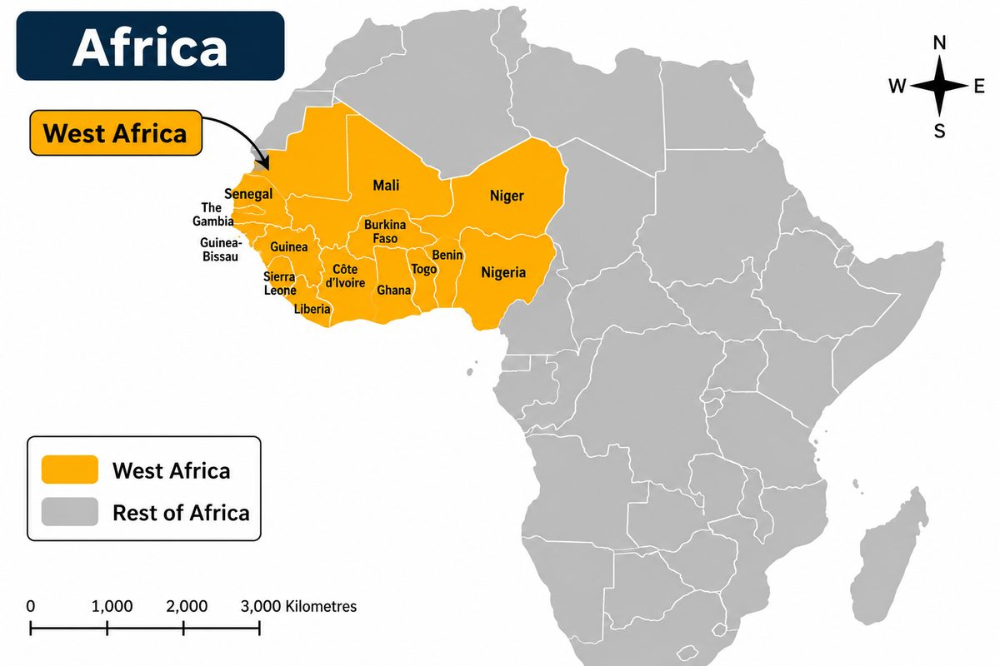

Orientation
Where did Jollof come from? This page locates the story in the Senegambian region and introduces the people and empire behind its name.
Why it matters: Knowing the shared roots helps you see the later regional versions as branches of one tradition.
Find the Senegambian region
On the map, find:
- Senegal and The Gambia, on the far western Atlantic coast — the area known as the Senegambian region
- how far east Ghana and Nigeria are — regions the dish later spread to

Historical context
- The name Jollof is commonly linked to the Wolof people and the historic Jolof Empire (also spelled Djolof), in parts of present-day Senegal and the wider Senegambian region.
- The Jolof Empire was an important political formation in medieval West Africa. Its origins are generally traced to around the thirteenth century.
- The region had established agricultural and trading traditions, including rice cultivation. Communities developed many ways of preparing rice with local ingredients.
- Senegal’s thieboudienne (ceebu jën) — rice, fish, vegetables and seasonings — is frequently discussed in accounts of Jollof’s origins.
A note on evidence
The exact development of modern Jollof rice is not fully documented. What is widely recognized is the connection between the Wolof people, the historical Jolof region and the development of rice-based culinary traditions.
Quick check: the origins
Key takeaways
- Jollof’s roots are linked to the Senegambian region — present-day Senegal and The Gambia.
- The name connects to the Wolof people and the Jolof Empire, which dates to around the thirteenth century.
- Rice cultivation and rice-based cooking were already established there.